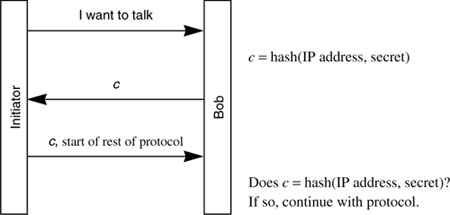

Networking Security Networking Security Networking Security Security Networking Security Networking Security Networking Charlie Kaufman Radia Perlman Mike Speciner Prentice Hall Network Security: Private Communication in a Public World, Second Edition Networking Security Networking Security Networking Security Security Networking Security Networking Security Networking Charlie Kaufman Radia Perlman Mike Speciner Prentice Hall Network Security: Private Communication in a Public World, Second Edition
16.5. Denial-of-Service/Clogging Protection
Even if Trudy can't impersonate Alice without knowing her secret, in many protocols she can lock out legitimate users by forcing Bob to use up all his state or computation resources with authentication attempts. This sort of attack happens on the Internet, and the impostor often launches the attack packets with forged IP addresses. Using forged IP source addresses makes it difficult to catch the attacker, and it makes it difficult to allow firewalls to easily recognize and discard traffic from the impostor. It is easy to put any address into the source address field of an IP packet, but it is more difficult to be able to receive packets sent to a randomly chosen IP address.
16.5.1. Cookies
The designers of Photuris (an early key management protocol for IPsec which will be more fully described in §18.1 Photuris) provided for denial-of-service protection by adding a feature which the designers called cookies. Despite the name, this feature has nothing to do with web browser cookies [see §25.5 Cookies].
The Photuris cookie is a number chosen by Bob, and unpredictable to the side initiating communication with Bob. When Bob receives a connection initiation from IP source address S, Bob sends this number, in the clear, to the IP address S. Bob does no significant computation until he receives the same cookie back from that IP address. This assures that the initiator can receive packets sent to the IP address from which it claims to be transmitting.
This feature makes it somewhat harder to mount a certain narrow set of attacks. It doesn't hurt, other than making the protocol slightly more complex, and adding a round-trip delay (in the case of Photuris). In theory, cookies could be used only when a node is getting swamped, saving the round-trip delay in the usual case (see Homework Problem 2).
A server has a limited amount of memory for keeping track of connections. If an attacker were sending zillions of connect requests, and Bob had to remember what cookie he sent for each request, then even if the attacker couldn't return the correct cookie, he could still swamp Bob's memory so that Bob couldn't accept connections from legitimate users. This is similar to the attack known as the TCP SYN attack ("SYN" is the first packet that Alice sends to Bob to initiate a TCP connection to Bob), where TCP requires Bob to keep state after receiving the first connection request, and an attacker can fill up Bob's table.
So we'd like Bob not to have to remember which cookies he sent to which connection initiators. The Photuris protocol provided for stateless cookies. The idea is to have the cookie be a function of the IP address and a secret known to Bob, so that Bob can calculate what cookie he would have sent to a particular IP address. One possibility is hash(IP address, secret). So the cookie protocol might look like Protocol 16-2.

16.5.2. Puzzles
Juels and Brainard [JUEL99] came up with a clever alternative scheme for some amount of protection from a denial-of-service attack of this sort, where there are more initiators than Bob has computation or storage to handle. The idea is that if Bob is getting swamped, then Bob can require initiators to do more computation in order to connect. Bob can require each one to solve a puzzle, for instance making them compute a number whose message digest is a particular value. Bob can require arbitrary amounts of computation from an initiator by varying the size of the unknown number ("what 27-bit number has an MD of x?"). He can also make it stateless, in a similar way to stateless cookies (Homework Problem 3). This would not help very much if there are a lot more attackers than legitimate connection initiators, but it will slow down a single attacker making a lot of connection attempts.
Verifying a puzzle answer is fast, since it merely involves doing a message digest. However solving the problem is exponential in the number of the bits Bob chooses for the size of the puzzle.
The idea would be that non-hostile connection initiators might not mind having to do a few seconds worth of computation in order to connect, but it would slow down attackers, since any single attacker would not be able to get to the point of requiring storage and significant computation from Bob more than once every few seconds.
Some issues are:
There are orders of magnitude of difference in the computational power of machines, and the amount of computation necessary to slow down a powerful machine would make it prohibitive to connect from a wimpy, ancient (e.g., two-year-old) machine. Many attackers could cooperate, or an attacker could create a virus that would attack from many sites simultaneously (this is known as a distributed denial-of-service attack).
|